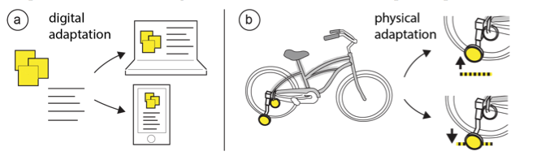
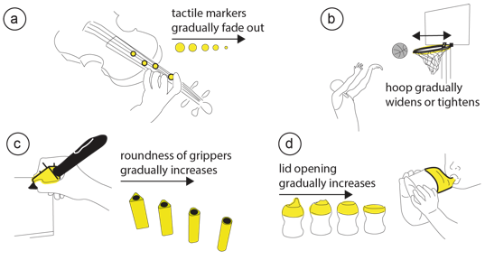
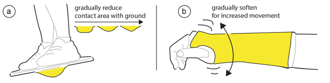
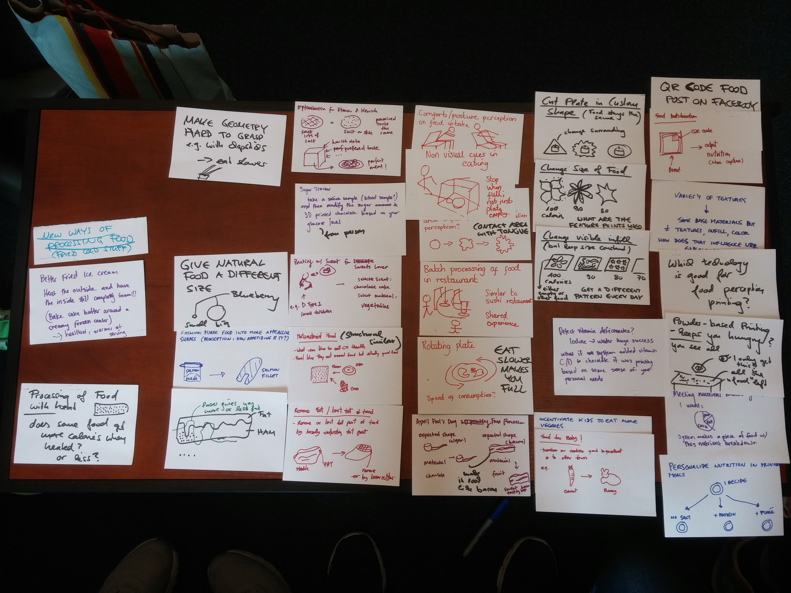

Adaptive User Interfaces adapt their functionality based on users’ individual capabilities, skills, and motivations. So far, adaptive user interfaces have mainly been explored for on-screen user interfaces, such as webpages and other digital applications that run on our desktop computers, laptops, and mobile phones (see Figure 1a). However, with computing moving into our environment and the increased availability of ‘smart’ everyday objects with integrated sensing, it now becomes feasible to ask how the approach deployed for digital adaptive user interfaces can be applied to physical user interfaces, i.e. the physical objects we use in our everyday lives (Figure 1b).

Figure: Adaptive Digital Interfaces vs. Adaptive Physical Interfaces2) Your Task
Design an adaptive physical tool.
In the process of doing this, you will:
brainstorm different ideas and select one for your project
build the physical prototype including sensing and actuation
create a parametric 3D model that virtually adapts as new new sensor data comes in
run a user study on your tool to gather user feedback and evaluate your tools effectiveness
make a website to describe your tool (include photos and a video)
2.1) Examples & Ideas
Adaptive User Interfaces can be applied in a wide variety of domains from learning, to productivity, rehabilitation, accessibility, and more. You have full freedom in selection an application for your adaptive tool, as long as it fits the theme.
2.2) Learning
Adaptive learning systems (ALS) aim to achieve an optimal learning curve by allowing every learner to learn with their own personalized system made specifically for their strengths, weaknesses, and learning pace To accomplish this, ALS continuously monitor the learner’s performance and adapt the level of difficulty of the task based on their progress. ALS have been implemented extensively in online education of math and languages, but not ALS system exists for learning motor skills with tools. Here we show three examples we have built as part of a research project:
2.2.1) Adaptive Basketball
Adaptation: Widens or tightens the hoop based on a user's performance. Raises and lowers the basket. Sensors: Microphone on the backboard and a switch on the net.
2.2.2) Adaptive Bike
Adaptation: Raises or lowers the training wheels. Sensors: Hall sensor and magnet on the training wheel measues if the training wheel rotates (user depends on it) or not.
2.2.3) Adaptive Pen
Adaptation: Changes the roundness of the gripper to be harder or easier to grip. Sensors: Smart writing pen captures the writing, computer vision then analyzes how well each character was written.
2.2.4) Other Learning Examples
Here are some more ideas we brainstormed.
When learning how to play the violin, learners often stick tactile markers onto the board to find the correct finger position for a specific note. To date, those markers are placed manually and learners take them off when they feel they may have mastered the position. In our adaptive version, the violin would sense how well the user is hitting the correct position during a training session and then gradually shrink markers over time. (b) In an adaptive basketball, we can measure how well the learner is hitting the board or scoring baskets, and then gradually widen or tighten the hoop. (c) When learning how to write, we can provide adaptive grippers that gradually increase their roundness until they match the shape of the pen. (d) When learning how to drink, we can gradually increase the opening of the lid to ease children’s transition to regular cups while avoiding spill.

Adaptive physical tools to improve motor skills learning.
2.3) Rehabilitation
When recovering from an accident, patients often have to recover basic muscle functionality and coordination skills. Existing rehabilitation tools allow patients to stretch the capabilities of their body to recover their original skills, however, they either do not adjust to a patient's progress or have to be adjusted manually.
For instance, consider the simple example of a wobble board that is used as a physiotherapy treatment to strengthen connective tissue for runners who regularly have ankle problems to make them less injury-prone. Wobble boards are supported by an inflated rubber hemisphere projecting from the base (Figure 4a). When using a wobble board for the first time, many have trouble even holding a basic pose since balancing the board on a single point is difficult. In a worst case scenario, patients might fall or have to jump off the board, potentially leading to more injuries. Rather than requiring beginner users to master this difficult task in such a fragile situation, an adaptive version of the board that starts with a flatter more stable base would allow patients to start training in an easy setting and then gradually adapt to more difficult settings by changing the shape of the base to be pointier.

Adaptive Physical Tools for Rehabilitation.
Similar issues exist across a wide variety of other medical support tools. For instance, consider the example of an arm cast. When having an arm cast for a broken arm, patients typically start with a hard cast, which is later replaced by a soft cast, and then taken off after full recovery [61]. However, during the healing process, the arm is not optimally supported: for instance, after a week of healing the hard cast might provide too much support, while the arm is not yet ready for the soft cast. An adaptive cast, in contrast, would gradually become softer every day as the patient’s arm continues healing. Using a pneumatic design, we can release air pressure to soften or increase air pressure to strengthen the support.
2.4) Productivity
To increase productivity, digital adaptive user interfaces show the most used functions in a primary location for fast reuse.
Can we build a physical adaptive tool that makes the most used functions for a task easier available for users? For instance, a shop tool could find out which task the user is working on, and adapt the force automatically. For a drill could track which screws are being screwed in by the user and rotate the correct drillbit into position.
2.5) Accessibility
To increase accessibility and universal access, adaptive user interfaces restructure and change the display of content based on each user’s individual abilities. For instance, for users with certain types of color blindness, digital user interfaces adapt the color choices for an interface. For users with visual impairments, adaptive user interfaces might increase the text size or change the layout. However, for users with physical disabilities (e.g. limited hand motion) no equivalent for physical tools exist.
2.6) Other Areas?
The list above is only exemplary. Feel free to come up with other application areas.
Buying Materials
1) $50 per student ($100 per team)
2) Ordering Parts
2.1) We order for you: If you want to order a part, add a line for your part to this google spreadsheet. We'll make daily orders at the start of the project period, and additional orders later as-needed. For inexpensive parts, plan for breakage. If a part costs $2, order more than you'll need to so minimize downtime from re-ordering.
2.2) You order yourself: You can also buy parts on your own and we can try to reimburse you later (not recommended, lots of extra work for both you and the teaching team). Note that you will be given or mailed a physical check in January as reimbursement. We need all paper receipts from you in order to reimburse you and the parts need to be shipped to Lotta Blumberg, MIT CSAIL, 32 Vassar Street, 32-273, Cambridge, MA 02139. Parts ordered to your home address cannot be reimbursed as MIT will not understand why we should reimburse you for 'personal' orders you shipped to your room or apartment.
3) Free Parts
Small parts like resistors, capacitors, some types of LEDs and certain chips, we will already have in stock (or you can ask EDS), so they don't count towards your budget.
Team Folders in Google Drive
1) Project Folder (Google Drive)
We'll be sharing files via this Google drive folder. Each team will be given their own folder to share materials with each other and with the teaching staff, and there will be a class-wide folder as well. Your team folder is where you'll upload project proposal, final report, code, etc. The class-wide folder is where the parts spreadsheet, teaming sheet, etc. live.
2) Template files: Default Team 00
The team folder 00 in the google drive has example template files for all deliverables. Copy them into your team folder to get started.
per idea: a scribble / drawing of each project idea
per idea: a max. 100 word description of what it is
Please do not make super polished drawings at this point as this is counter productive to the whole brainstorming idea. Your ideas should be presented low-fidelity in look (aka sketches) so your audience feels invited to provide feedback. You still need to make sure your audience is able to understand what you are showing.
Here's a brainstorming we ran in my lab a few weeks ago:

Prepare a 5 min google slides presentation (1 min about team partner #1, 1 min about team partner #1, 1 min idea #1, 1 min idea #2, 1 min idea #3).
Use the template in your google drive team folder.
It should look like this.
1 slide about myself team partner #1 (hobbies, junior/senior? 6-1/6-2/6-3? dorm? hardware/software strength?)
1 slide about prior projects team partner #1.
1 slide about myself team partner #2.
1 slide about prior projects team partner #2.
1 slide idea #1.
1 slide idea #2.
1 slide idea #3.
If you include videos and images, make sure all media is embedded in the presentation otherwise the video will not play on our computers.
Which of your ideas you choose for your project is up to you.
However, the teaching team will send you an email soon after the deadline describing which ideas we find most promising / innovative, i.e. we will rank your ideas based on what we think will make a great class project.
5) Technical Proposal Due (Sept. 28, 11.59pm)
Please copy the template and then change it.
Pick one of your ideas as your final project.
Write a technical proposal that describes how you plan to build it.
This is not to torture you, but to help you think your project through before you start building, i.e. especially think about alternatives for the sensors / actuators etc. and potential delivery times when they ship.
On Sept. 28 (friday) there is no class. Lotta and Mark will be at IDC in the garage space and help you with any questions you might have.
Milestone Plan Due (Sept. 26)
Your next step is to create a milestone plan for your proposal.
You will create milestones for every week of the semester until the final presentation.
For the first weekly milestone, we will meet with you in class to see the demo.
After the first week, you will upload a weekly video to your google drive (just use your phone) showing that you did what you had planned in the milestone.
While we want a full milestone plan on Sept. 26, you will be able to adjust your milestone on a weekly basis during the semester. Changes can be made a week ahead of the next milestone (e.g. for your milestone that is due Oct. 19, you can rewrite the milestone until Oct. 12 but no changes will be possible afterwards).
Milestone are graded on a done (100%) vs. not done (0%) basis. If you have two milestones for the week, and you get one done (100%) and one not done (0%) you will get 50% in total for the week. So more detailed milestones broken up in several tasks give you a better change. Maximum of 4 milestones per week.
Here are milestones we want to see:
- Sept. 28: first milestone, goal is up to you
- Oct 5: first sensor wired up and working
- Oct 12: first actuator wired up and working
- Oct 19: first Rhino3D viz working
First Milestone (Sept. 28)
In class, we will meet with each team for 15 min to see their first milestone. Please prepare a live demo of what you had written into your milestone. e.g. if you said you are going to demonstrate a working heart beart sensor, then we want to see the sensor on the breadboard and the data coming through via the Arduino.
First Sensor Working (Oct. 5)
In this milestone, we want to see your first sensor working.
The sensor should be correctly wired up and the data should be shown on the Arduino Console.
First Actuator Working (Oct. 12)
In this milestone, we want to see your first actuator working (e.g. a motor, a pneumatic pump, some shape memory alloy).
The actuator should be correctly wired up and moving.
First 3D Viz Working (Oct. 19)
In this milestone, we want to see a first 3D visualization in Rhino, i.e. you should have a very basic 3D model of your prototype and a few parameters connected to make parts of it adapt.
Midterm Presentation (Oct. 26)
Every team will have 3 min to show their progress.
At the minimum, show your sensor, show you actuator, show the 3D viz you have.
Create a Rotoscope (Nov. 2)
Keep building your prototype.
In addition, create a rotoscope of your idea.
Follow this tutorial and upload the result to Google drive.
First Photo (Nov. 9)
Keep building your prototype.
In addition, take a high-quality raw photo of your prototype with a DSLR camera.
Edit the photo with photoshop to make it look better.
Upload your raw photo as CR2, and upload your edited version of it.
First Video Snippet (Nov. 16)
Keep building your prototype.
Take two or three short video snippets of your prototype in action.
Edit those video snippets and compose them into a video using Adobe Premiere.
Upload your seperate video snippets and the composed video to your google drive.
Design User Study (Nov. 23)
Keep building your prototype.
Design a user study.
Run User Study (Nov. 30)
Run a user study with 6 users and report the results.